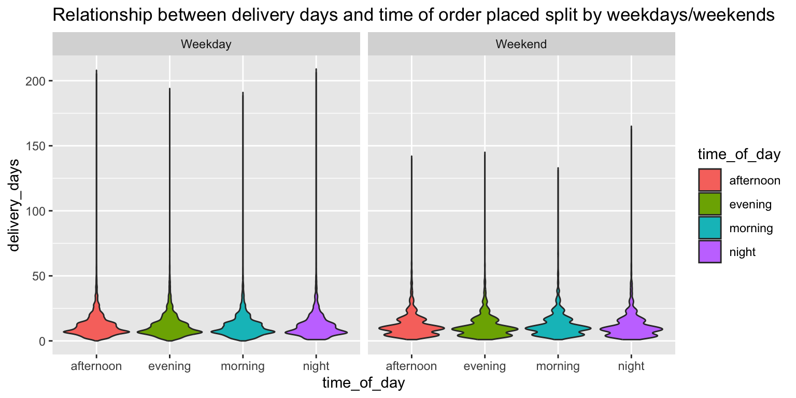
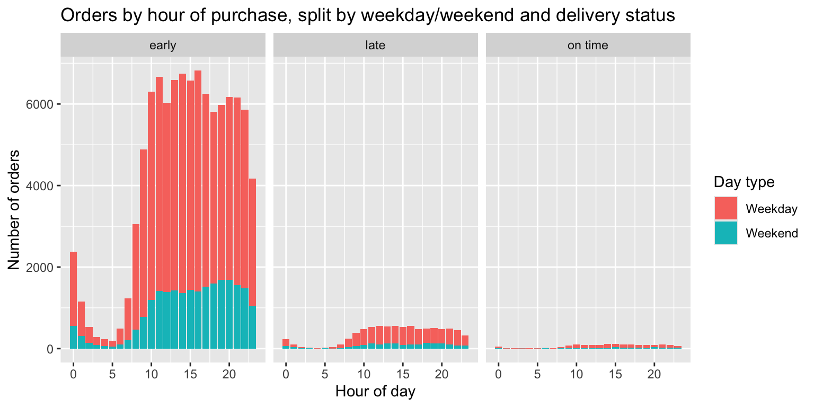
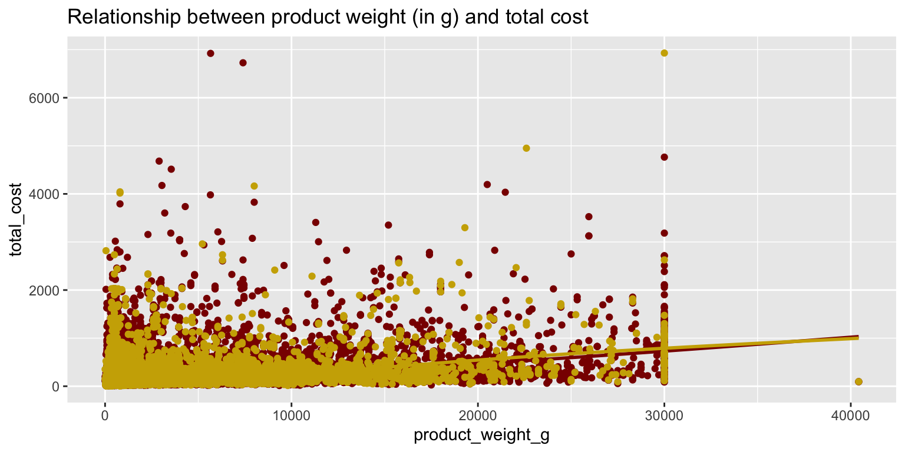
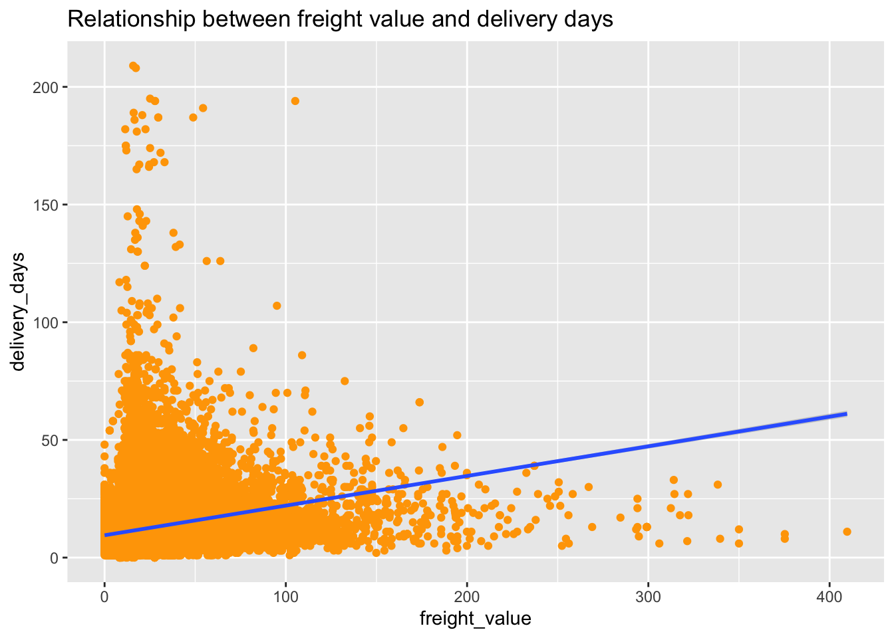

Code
library(tidyverse)
df_master_clean <- readRDS("data/df_master_clean.rds")Know the data, know the outcome, then choose the chart
Rows: 110,196
Columns: 34
$ order_id <chr> "00010242fe8c5a6d1ba2dd792cb16214", "000…
$ order_item_id <dbl> 1, 1, 1, 1, 1, 1, 1, 1, 1, 1, 1, 1, 1, 1…
$ product_id <chr> "4244733e06e7ecb4970a6e2683c13e61", "e5f…
$ seller_id <chr> "48436dade18ac8b2bce089ec2a041202", "dd7…
$ shipping_limit_date <dttm> 2017-09-19 09:45:35, 2017-05-03 11:05:1…
$ price <dbl> 58.90, 239.90, 199.00, 12.99, 199.90, 21…
$ freight_value <dbl> 13.29, 19.93, 17.87, 12.79, 18.14, 12.69…
$ customer_id <chr> "3ce436f183e68e07877b285a838db11a", "f6d…
$ order_status <chr> "delivered", "delivered", "delivered", "…
$ order_purchase_timestamp <dttm> 2017-09-13 08:59:02, 2017-04-26 10:53:0…
$ purchase_year <dbl> 2017, 2017, 2018, 2018, 2017, 2017, 2017…
$ purchase_month <dbl> 9, 4, 1, 8, 2, 5, 12, 7, 3, 7, 3, 7, 7, …
$ purchase_day_of_week <chr> "Wednesday", "Wednesday", "Sunday", "Wed…
$ order_delivered_customer_date <dttm> 2017-09-20 23:43:48, 2017-05-12 16:04:2…
$ order_estimated_delivery_date <dttm> 2017-09-29, 2017-05-15, 2018-02-05, 201…
$ delivery_days <dbl> 7, 16, 7, 6, 25, 6, 8, 5, 9, 2, 4, 10, 6…
$ estimated_days <dbl> 15, 18, 21, 11, 40, 21, 24, 20, 9, 20, 1…
$ customer_unique_id <chr> "871766c5855e863f6eccc05f988b23cb", "eb2…
$ customer_zip_code_prefix <dbl> 28013, 15775, 35661, 12952, 13226, 38017…
$ customer_city <chr> "campos dos goytacazes", "santa fe do su…
$ customer_state <chr> "RJ", "SP", "MG", "SP", "SP", "MG", "SP"…
$ product_category_name <chr> "cool_stuff", "pet_shop", "moveis_decora…
$ product_name_length <dbl> 58, 56, 59, 42, 59, 36, 52, 39, 59, 52, …
$ product_description_length <dbl> 598, 239, 695, 480, 409, 558, 815, 1310,…
$ product_photos_qty <dbl> 4, 2, 2, 1, 1, 1, 1, 3, 1, 1, 1, 1, 1, 2…
$ product_weight_g <dbl> 650, 30000, 3050, 200, 3750, 450, 200, 1…
$ product_length_cm <dbl> 28, 50, 33, 16, 35, 24, 27, 35, 30, 29, …
$ product_height_cm <dbl> 9, 30, 13, 10, 40, 8, 5, 75, 12, 3, 25, …
$ product_width_cm <dbl> 14, 40, 33, 15, 30, 15, 20, 45, 16, 21, …
$ product_category_name_english <chr> "cool_stuff", "pet_shop", "furniture_dec…
$ seller_zip_code_prefix <dbl> 27277, 3471, 37564, 14403, 87900, 14091,…
$ seller_city <chr> "volta redonda", "sao paulo", "borda da …
$ seller_state <chr> "SP", "SP", "MG", "SP", "PR", "SP", "SP"…
$ purchase_year_month <date> 2017-09-01, 2017-04-01, 2018-01-01, 201…The dataset is comprised of 110196 rows and 34 columns. Each row belongs to an order and item, where multiple items can be a part of a single order
Getting the baseline: what does delivery days look like at Olist?
# A tibble: 1 × 6
min_del_days avg_del_days median_del_days max_del_days sd_del_days num_orders
<dbl> <dbl> <dbl> <dbl> <dbl> <int>
1 0 12.0 10 209 9.45 96476The mean sits above the median, so delivery days are skewed to the right, with the right tail going up to a maximum of 209 days. Every comparison from here is judged against this baseline.
df_master_clean |>
group_by(order_status) |>
summarise(
min_del_days = min(delivery_days),
avg_del_days = mean(delivery_days),
median_del_days = median(delivery_days),
max_del_days = max(delivery_days),
sd_del_days = sd(delivery_days),
num_orders = n_distinct(order_id)
)|>
arrange(desc(avg_del_days))# A tibble: 2 × 7
order_status min_del_days avg_del_days median_del_days max_del_days
<chr> <dbl> <dbl> <dbl> <dbl>
1 canceled 7 18 10 35
2 delivered 0 12.0 10 209
# ℹ 2 more variables: sd_del_days <dbl>, num_orders <int>Median delivery days are same for canceled and delivered orders. However, avg days for canceled orders are considerably higher than delivered orders. Probably due to this reason, these orders are canceled by the customer Note: There are only 6 canceled orders out of ~97k orders. That means we can safely assume that all the analysis done is for delivered orders only
Now the same by purchase_day_of_week:
df_master_clean |>
group_by(purchase_day_of_week) |>
summarise(
min_del_days = min(delivery_days),
avg_del_days = mean(delivery_days),
median_del_days = median(delivery_days),
max_del_days = max(delivery_days),
sd_del_days = sd(delivery_days),
num_orders = n_distinct(order_id)
)|>
arrange(desc(avg_del_days))# A tibble: 7 × 7
purchase_day_of_week min_del_days avg_del_days median_del_days max_del_days
<chr> <dbl> <dbl> <dbl> <dbl>
1 Friday 0 13.0 11 208
2 Saturday 2 12.8 10 165
3 Thursday 0 12.2 11 194
4 Wednesday 0 11.9 9 194
5 Tuesday 0 11.5 9 209
6 Monday 0 11.5 9 189
7 Sunday 1 11.4 9 141
# ℹ 2 more variables: sd_del_days <dbl>, num_orders <int>Average delivery days for Sunday to Wednesday are roughly similar. However, for Thurs - Saturday, avg delivery days are higher than that of the other days of the week.
Now the same by customer_state:
df_master_clean |>
group_by(customer_state) |>
summarise(
min_del_days = min(delivery_days),
avg_del_days = mean(delivery_days),
median_del_days = median(delivery_days),
max_del_days = max(delivery_days),
sd_del_days = sd(delivery_days),
num_orders = n_distinct(order_id)
)|>
arrange(desc(avg_del_days))# A tibble: 27 × 7
customer_state min_del_days avg_del_days median_del_days max_del_days
<chr> <dbl> <dbl> <dbl> <dbl>
1 RR 6 27.8 24.5 172
2 AP 5 27.8 24 187
3 AM 4 26.0 26 138
4 AL 4 24.0 22 90
5 PA 4 23.3 21 195
6 MA 3 21.2 19 168
7 SE 6 21.0 17 194
8 CE 2 20.5 18 168
9 AC 7 20.3 18 72
10 PB 5 20.1 18 102
# ℹ 17 more rows
# ℹ 2 more variables: sd_del_days <dbl>, num_orders <int>Amapá and Roraima have the highest average delivery days (~28 days). Sao Paulo has the lowest mean delivery days while also being the state of highest number of orders placed. This makes sense considering most number of orders come from the capital city and Olist has a good reach in the cities of that state.
Lastly, by purchase_year_month
df_master_clean |>
group_by(purchase_month) |>
summarise(
min_del_days = min(delivery_days),
avg_del_days = mean(delivery_days),
median_del_days = median(delivery_days),
max_del_days = max(delivery_days),
sd_del_days = sd(delivery_days),
num_orders = n_distinct(order_id)
)|>
arrange((purchase_month))# A tibble: 12 × 7
purchase_month min_del_days avg_del_days median_del_days max_del_days
<dbl> <dbl> <dbl> <dbl> <dbl>
1 1 1 13.5 11 191
2 2 0 15.7 13 209
3 3 1 14.8 12 195
4 4 1 11.7 10 168
5 5 0 10.9 9 182
6 6 0 9.59 8 175
7 7 0 9.42 8 86
8 8 1 8.55 7 115
9 9 1 11.4 10 132
10 10 1 11.7 10 109
11 11 0 14.6 12 173
12 12 1 14.8 13 138
# ℹ 2 more variables: sd_del_days <dbl>, num_orders <int>August, September and October are months where the avg delivery days are considerably lower compared to months like February, March, November and December. It could be because of colder months from November to March, or other logistical constraints
Adding the following calculated fields 1. Time- based - Weekday/weekend flag based on the day of the week - hour of day (based on timestamp) - time of day (morning, afternoon, evening or night time)
library(lubridate) # Used to extract time based features from timestamp
df_master_clean <- df_master_clean |>
mutate(
hour_of_day = hour(order_purchase_timestamp),
day_type = case_when(
purchase_day_of_week %in% c("Saturday", "Sunday") ~ "Weekend",
TRUE ~ "Weekday"),
time_of_day = case_when(
hour_of_day < 6 ~ "night",
hour_of_day < 12 ~ "morning",
hour_of_day < 17 ~ "afternoon",
hour_of_day < 21 ~ "evening",
TRUE ~ "night"
)
)# A tibble: 5 × 4
order_purchase_timestamp hour_of_day day_type time_of_day
<dttm> <int> <chr> <chr>
1 2017-09-13 08:59:02 8 Weekday morning
2 2017-04-26 10:53:06 10 Weekday morning
3 2018-01-14 14:33:31 14 Weekend afternoon
4 2018-08-08 10:00:35 10 Weekday morning
5 2017-02-04 13:57:51 13 Weekend afternoon Checking how many rows have weight = 0
# A tibble: 8 × 37
order_id order_item_id product_id seller_id shipping_limit_date price
<chr> <dbl> <chr> <chr> <dttm> <dbl>
1 06afc1144eb9f51e… 1 e673e90ef… b39d7fe2… 2018-08-23 17:25:20 130.
2 06afc1144eb9f51e… 2 e673e90ef… b39d7fe2… 2018-08-23 17:25:20 130.
3 06d9e69034388abf… 1 36ba42dd1… b39d7fe2… 2018-08-10 09:10:11 100
4 06d9e69034388abf… 2 36ba42dd1… b39d7fe2… 2018-08-10 09:10:11 100
5 200b121c28e10ef6… 1 81781c0fe… b39d7fe2… 2018-08-14 16:10:16 100
6 476b812a7e4fc972… 1 e673e90ef… b39d7fe2… 2018-08-22 11:30:42 130.
7 4abc7b5330425bcf… 1 8038040ee… b39d7fe2… 2018-08-09 21:31:33 130.
8 b489f7ae130ba3fd… 1 e673e90ef… b39d7fe2… 2018-08-22 20:49:57 130.
# ℹ 31 more variables: freight_value <dbl>, customer_id <chr>,
# order_status <chr>, order_purchase_timestamp <dttm>, purchase_year <dbl>,
# purchase_month <dbl>, purchase_day_of_week <chr>,
# order_delivered_customer_date <dttm>, order_estimated_delivery_date <dttm>,
# delivery_days <dbl>, estimated_days <dbl>, customer_unique_id <chr>,
# customer_zip_code_prefix <dbl>, customer_city <chr>, customer_state <chr>,
# product_category_name <chr>, product_name_length <dbl>, …We see that there are only 8 rows with weight = 0. We can remove these rows from our dataset so that our calculate price per weight is not null
# A tibble: 5 × 5
price freight_value total_cost product_weight_g price_per_weight
<dbl> <dbl> <dbl> <dbl> <dbl>
1 58.9 13.3 72.2 650 90.6
2 240. 19.9 260. 30000 8.00
3 199 17.9 217. 3050 65.2
4 13.0 12.8 25.8 200 65.0
5 200. 18.1 218. 3750 53.3 # A tibble: 10 × 4
delivery_days estimated_days delivered_status delayed_days
<dbl> <dbl> <chr> <dbl>
1 7 15 early -8
2 16 18 early -2
3 7 21 early -14
4 6 11 early -5
5 25 40 early -15
6 6 21 early -15
7 8 24 early -16
8 5 20 early -15
9 9 9 on time 0
10 2 20 early -18# A tibble: 3 × 3
delivered_status total_orders pct
<chr> <int> <dbl>
1 early 87782 91
2 late 7308 7.6
3 on time 1380 1.4Good news! Around 90% of the orders are delivered earlier than the expected time. This could also mean that Olist might intentionally show the ETA more to account for unexpected delays
Min. 1st Qu. Median Mean 3rd Qu. Max.
-146.00 -17.00 -12.00 -11.43 -7.00 189.00 Because 90% of the orders are early, hence mean and median of delayed_days is negative
# A tibble: 6 × 4
# Groups: day_type [2]
day_type delivered_status n pct
<chr> <chr> <int> <dbl>
1 Weekday early 77560 91.1
2 Weekday late 6410 7.5
3 Weekday on time 1205 1.4
4 Weekend early 22963 91.8
5 Weekend late 1737 6.9
6 Weekend on time 313 1.3Weekends and weekdays look alike on delivery status.
# A tibble: 12 × 4
# Groups: time_of_day [4]
time_of_day delivered_status n pct
<chr> <chr> <int> <dbl>
1 afternoon early 32748 91
2 afternoon late 2746 7.6
3 afternoon on time 498 1.4
4 evening early 24213 91.2
5 evening late 1959 7.4
6 evening on time 364 1.4
7 morning early 22630 91.6
8 morning late 1761 7.1
9 morning on time 317 1.3
10 night early 20932 91.2
11 night late 1681 7.3
12 night on time 339 1.5Different times of day also look alike on delivery status.
# A tibble: 3 × 3
delivered_status median_freight_value median_total_cost
<chr> <dbl> <dbl>
1 early 16.2 91.3
2 late 17.6 100.
3 on time 15.6 91.2Median total cost (price + freight value) is higher for late orders than orders delivered early or on time. This could be because order being late would mean more charges incurred in transportation
# A tibble: 4 × 5
time_of_day total_orders mean_cost median_cost pct_of_orders
<chr> <int> <dbl> <dbl> <dbl>
1 afternoon 31219 142. 92.6 32.4
2 evening 23354 142. 93.0 24.2
3 morning 21591 138. 92.8 22.4
4 night 20306 136. 89.4 21 We see that 1/3rd of the orders are placed in the afternoon. Orders placed in evening, morning and night time are split evenly Also, mean cost for orders placed in afternoon and evening are higher than orders placed in other times of the day
Min. 1st Qu. Median Mean 3rd Qu. Max.
6.08 55.19 92.16 139.97 157.51 6929.31 Min. 1st Qu. Median Mean 3rd Qu. Max.
7.650e-01 4.388e+01 8.925e+01 1.901e+02 1.999e+02 1.674e+05 Here, mean is considerably higher than median. This means that data showing total cost is heavily skewed to the right, meaning there are a few orders that cost Olist considerably more There is a wide range for total cost (6 to 7000 USD) Same for price per kg
# A tibble: 74 × 3
product_category_name_english num_of_orders pct_of_orders
<chr> <int> <dbl>
1 bed_bath_table 9266 9.6
2 health_beauty 8649 9
3 sports_leisure 7530 7.8
4 computers_accessories 6529 6.8
5 furniture_decor 6307 6.5
6 housewares 5743 6
7 watches_gifts 5493 5.7
8 telephony 4093 4.2
9 auto 3809 3.9
10 toys 3804 3.9
# ℹ 64 more rows“Bed bath table” and “health beauty” are top 2 categories in terms of orders placed (~20% or orders are placed from these categories)
# A tibble: 74 × 2
product_category_name_english avg_total_cost
<chr> <dbl>
1 computers 1147.
2 small_appliances_home_oven_and_coffee 675.
3 home_appliances_2 512.
4 agro_industry_and_commerce 370.
5 musical_instruments 311.
6 portateis_cozinha_e_preparadores_de_alimentos 302.
7 small_appliances 301.
8 fixed_telephony 235.
9 construction_tools_safety 232.
10 furniture_bedroom 227.
# ℹ 64 more rowsOrders from “computers” category have the highest average total cost (1150 USD) whereas home comfort items have the lowest avg total cost (40 USD)
# A tibble: 74 × 2
product_category_name_english avg_delivery_days
<chr> <dbl>
1 office_furniture 20.4
2 christmas_supplies 15.3
3 security_and_services 15
4 fashion_shoes 14.9
5 home_comfort_2 14.1
6 furniture_mattress_and_upholstery 13.9
7 home_appliances_2 13.4
8 furniture_living_room 13.3
9 fashion_underwear_beach 13.3
10 garden_tools 13.2
# ℹ 64 more rowsOffice furniture take the highest number of delivery days on average followed by christmas supplied (probably because of the seasonal nature of the items) Least avg delivery days are from the category arts and craftmanship
# A tibble: 74 × 2
product_category_name_english avg_product_weight_kg
<chr> <dbl>
1 office_furniture 11.3
2 furniture_bedroom 10.2
3 kitchen_dining_laundry_garden_furniture 8.94
4 home_appliances_2 8.93
5 furniture_living_room 8.10
6 furniture_mattress_and_upholstery 7.47
7 computers 7.20
8 industry_commerce_and_business 6.60
9 luggage_accessories 5.80
10 small_appliances_home_oven_and_coffee 5.01
# ℹ 64 more rowsOffice furniture has the highest avg product weight (around 11.3kgs). This could be the reason why this category was highest when it came to average delivery days
Distribution of numerical variables
For total cost and delivery days, the distribution seems right skewed with some heavy clusters on the left, but a right tail showing high cost and delivery days for some orders respectively
For delayed_days, we see orders clustered in the negative space as we saw earlier that 90% of the orders were actually delivered earlier than expected.
One numeric by one categorical, per group: violin, faceted.

Purchase time of day barely matters for time taken for delivery Weekday orders show a longer maximum tail than weekend orders, but weekdays also have far more orders
Counts of a orders by (hour of purchas), composition by day type (weekday vs. weekend), per delivery status: stacked bars in facets.

Number of early orders placed from 10AM to post 8PM on weekdays are higher than that of weekends
Two numeric variables, a relationship: scatter plus smooth, one layer per group.
ggplot(df_master_clean, aes(x = product_weight_g, y = total_cost)) +
geom_point(data = filter(df_master_clean, day_type == "Weekday"), color = "darkred") +
geom_smooth(data = filter(df_master_clean, day_type == "Weekday"), color = "darkred", se = FALSE) +
geom_point(data = filter(df_master_clean, day_type == "Weekend"), color = "gold3") +
geom_smooth(data = filter(df_master_clean, day_type == "Weekend"), color = "gold3", se = FALSE) +
labs(title = "Relationship between product weight (in g) and total cost")
Heavier items cost more to ship, but weight explains only part of freight. Weekday vs. weekend makes no difference.
Weekday v/s weekend do not differentiate substantially. However, we do see that with increased product weight, the freight value increases too

freight_value and delivery_days are slighly correlated. This makes sense intuitively that orders taking more time in delivery incur more cost to the company
---
title: "Exploration"
subtitle: "Know the data, know the outcome, then choose the chart"
---
```{r}
#| label: setup
library(tidyverse)
df_master_clean <- readRDS("data/df_master_clean.rds")
```
## Looking at data
```{r}
glimpse(df_master_clean)
```
```{r}
print(nrow(df_master_clean))
print(ncol(df_master_clean))
```
The dataset is comprised of 110196 rows and 34 columns. Each row belongs to an order and item, where multiple items can be a part of
a single order
## The outcome on its own
Getting the baseline: what does delivery days look like at Olist?
```{r}
df_master_clean |>
summarise(
min_del_days = min(delivery_days),
avg_del_days = mean(delivery_days),
median_del_days = median(delivery_days),
max_del_days = max(delivery_days),
sd_del_days = sd(delivery_days),
num_orders = n_distinct(order_id)
)
```
The mean sits above the median, so delivery days are skewed to the right, with the right tail going up to a maximum of 209 days. Every comparison from here is judged against this baseline.
## The same table, grouped by order status, purchase_day_of_week, customer_state and purchase_year_month
## Looking at delivery days split by order status
```{r}
df_master_clean |>
group_by(order_status) |>
summarise(
min_del_days = min(delivery_days),
avg_del_days = mean(delivery_days),
median_del_days = median(delivery_days),
max_del_days = max(delivery_days),
sd_del_days = sd(delivery_days),
num_orders = n_distinct(order_id)
)|>
arrange(desc(avg_del_days))
```
Median delivery days are same for canceled and delivered orders. However, avg days for canceled orders are considerably
higher than delivered orders. Probably due to this reason, these orders are canceled by the customer
Note: There are only 6 canceled orders out of ~97k orders. That means we can safely assume that all the analysis done is for
delivered orders only
Now the same by purchase_day_of_week:
```{r}
df_master_clean |>
group_by(purchase_day_of_week) |>
summarise(
min_del_days = min(delivery_days),
avg_del_days = mean(delivery_days),
median_del_days = median(delivery_days),
max_del_days = max(delivery_days),
sd_del_days = sd(delivery_days),
num_orders = n_distinct(order_id)
)|>
arrange(desc(avg_del_days))
```
Average delivery days for Sunday to Wednesday are roughly similar. However, for Thurs - Saturday, avg delivery days are higher than that of the other days of the week.
Now the same by customer_state:
```{r}
df_master_clean |>
group_by(customer_state) |>
summarise(
min_del_days = min(delivery_days),
avg_del_days = mean(delivery_days),
median_del_days = median(delivery_days),
max_del_days = max(delivery_days),
sd_del_days = sd(delivery_days),
num_orders = n_distinct(order_id)
)|>
arrange(desc(avg_del_days))
```
Amapá and Roraima have the highest average delivery days (~28 days).
Sao Paulo has the lowest mean delivery days while also being the state of highest number of orders placed. This makes sense considering most number of orders come from the capital city and Olist has a good reach in the cities of that state.
Lastly, by purchase_year_month
```{r}
df_master_clean |>
group_by(purchase_month) |>
summarise(
min_del_days = min(delivery_days),
avg_del_days = mean(delivery_days),
median_del_days = median(delivery_days),
max_del_days = max(delivery_days),
sd_del_days = sd(delivery_days),
num_orders = n_distinct(order_id)
)|>
arrange((purchase_month))
```
August, September and October are months where the avg delivery days are considerably lower compared to months like February, March, November and December. It could be because of colder months from November to March, or other logistical constraints
## Data manipulations
Adding the following calculated fields
1. Time- based
- Weekday/weekend flag based on the day of the week
- hour of day (based on timestamp)
- time of day (morning, afternoon, evening or night time)
```{r}
library(lubridate) # Used to extract time based features from timestamp
df_master_clean <- df_master_clean |>
mutate(
hour_of_day = hour(order_purchase_timestamp),
day_type = case_when(
purchase_day_of_week %in% c("Saturday", "Sunday") ~ "Weekend",
TRUE ~ "Weekday"),
time_of_day = case_when(
hour_of_day < 6 ~ "night",
hour_of_day < 12 ~ "morning",
hour_of_day < 17 ~ "afternoon",
hour_of_day < 21 ~ "evening",
TRUE ~ "night"
)
)
```
```{r}
df_master_clean |>
select(order_purchase_timestamp, hour_of_day, day_type, time_of_day) |>
head(5)
```
2. Price related
- total cost of the item which is price + freight value
- Price per weight (in kg) (only for the orders which have weight > 0)
Checking how many rows have weight = 0
```{r}
df_master_clean |>
filter(product_weight_g == 0)
```
We see that there are only 8 rows with weight = 0. We can remove these rows from our dataset so that our calculate price per weight is not null
```{r}
df_master_clean <- df_master_clean |>
filter(product_weight_g != 0)
```
```{r}
df_master_clean <- df_master_clean |>
mutate(
total_cost = price + freight_value,
price_per_weight = (price / product_weight_g)*1000
)
```
```{r}
df_master_clean |>
select(price, freight_value, total_cost, product_weight_g, price_per_weight) |>
head(5)
```
3. Delivery status related
- number of days by which the order is delayed
- delivered status - on time, early or delayed
```{r}
df_master_clean <- df_master_clean |>
mutate(
delayed_days = delivery_days - estimated_days,
delivered_status = case_when(
delivery_days == estimated_days ~ "on time",
delivery_days > estimated_days ~ "late",
TRUE ~ "early"
)
)
```
```{r}
df_master_clean |>
select(delivery_days, estimated_days, delivered_status, delayed_days) |>
head(10)
```
## Count of orders by delivery status
```{r}
df_master_clean |>
group_by(delivered_status) |>
summarise(total_orders = n_distinct(order_id)) |>
mutate(pct = round(100 * total_orders / sum(total_orders), 1)) |>
arrange(desc(total_orders))
```
Good news! Around 90% of the orders are delivered earlier than the expected time. This could also mean that Olist might intentionally show the ETA more to account for unexpected delays
## Distribution of delayed days
```{r}
summary(df_master_clean$delayed_days)
```
Because 90% of the orders are early, hence mean and median of delayed_days is negative
## Looking if time relates to delays in delivery
```{r}
# Share of each status by day type
df_master_clean |>
count(day_type, delivered_status) |>
group_by(day_type) |>
mutate(pct = round(100 * n / sum(n), 1))
```
Weekends and weekdays look alike on delivery status.
```{r}
df_master_clean |>
count(time_of_day, delivered_status) |>
group_by(time_of_day) |>
mutate(pct = round(100 * n / sum(n), 1))
```
Different times of day also look alike on delivery status.
## Looking at delivered status by freight value
```{r}
df_master_clean |>
group_by(delivered_status) |>
summarise(median_freight_value = median(freight_value), median_total_cost = median(total_cost))
```
Median total cost (price + freight value) is higher for late orders than orders delivered early or on time. This could be because order being late would mean more charges incurred in transportation
## Looking at number and pct of orders placed at different times of day
```{r}
df_master_clean |>
group_by(time_of_day) |>
summarise(
total_orders = n_distinct(order_id),
mean_cost = round(mean(total_cost), 2),
median_cost = round(median(total_cost), 2)
) |>
mutate(pct_of_orders = round(100 * total_orders / sum(total_orders), 1)) |>
arrange(desc(total_orders))
```
We see that 1/3rd of the orders are placed in the afternoon.
Orders placed in evening, morning and night time are split evenly
Also, mean cost for orders placed in afternoon and evening are higher than orders placed in other times of the day
## Looking at total cost and price/weight columns
```{r}
summary(df_master_clean$total_cost)
summary(df_master_clean$price_per_weight)
```
Here, mean is considerably higher than median. This means that data showing total cost is heavily skewed to the right, meaning there are a few orders that cost Olist considerably more
There is a wide range for total cost (6 to 7000 USD)
Same for price per kg
## Analysis of number of orders, total cost, estimated days, product weight by top 10 product categories in each segment
```{r}
total_orders <- n_distinct(df_master_clean$order_id)
df_master_clean |>
group_by(product_category_name_english) |>
summarize(num_of_orders = n_distinct(order_id)) |>
mutate(pct_of_orders = round(100 * num_of_orders / total_orders, 1)) |>
arrange(desc(num_of_orders))
```
"Bed bath table" and "health beauty" are top 2 categories in terms of orders placed (~20% or orders are placed from these categories)
```{r}
df_master_clean |>
group_by(product_category_name_english) |>
summarize(avg_total_cost = mean(total_cost)) |>
arrange(desc(avg_total_cost))
```
Orders from "computers" category have the highest average total cost (1150 USD) whereas home comfort items have the lowest avg total cost (40 USD)
```{r}
df_master_clean |>
group_by(product_category_name_english) |>
summarize(avg_delivery_days = mean(delivery_days)) |>
arrange(desc(avg_delivery_days))
```
Office furniture take the highest number of delivery days on average followed by christmas supplied (probably because of the seasonal nature of the items)
Least avg delivery days are from the category arts and craftmanship
```{r}
df_master_clean |>
group_by(product_category_name_english) |>
summarize(avg_product_weight_kg = mean(product_weight_g)/1000) |>
arrange(desc(avg_product_weight_kg))
```
Office furniture has the highest avg product weight (around 11.3kgs). This could be the reason why this category was highest when it came to average delivery days
## Data Visualization
*Distribution of numerical variables*
## Total cost
```{r}
#| fig-width: 8
#| fig-height: 3.5
ggplot(df_master_clean, aes(x = total_cost)) + geom_histogram()
```
```{r}
#| fig-width: 8
#| fig-height: 3.5
ggplot(df_master_clean, aes(x = delivery_days)) + geom_histogram()
```
```{r}
#| fig-width: 8
#| fig-height: 3.5
ggplot(df_master_clean, aes(x = delayed_days)) + geom_histogram()
```
For total cost and delivery days, the distribution seems right skewed with some heavy clusters on the left, but a right tail showing high cost and delivery days for some orders respectively
For delayed_days, we see orders clustered in the negative space as we saw earlier that 90% of the orders were actually delivered earlier than expected.
## Looking at relations between different columns
*One numeric by one categorical, per group: violin, faceted.*
```{r}
#| fig-width: 8
#| fig-height: 4
#|
library(ggplot2)
ggplot(df_master_clean, aes(x = time_of_day, y = delivery_days, fill = time_of_day)) +
geom_violin() +
facet_wrap(~day_type) + labs(title = "Relationship between delivery days and time of order placed split by weekdays/weekends")
```
Purchase time of day barely matters for time taken for delivery
Weekday orders show a longer maximum tail than weekend orders, but weekdays also have far more orders
## Relationship between categorical and continuous variable split by a categorical variable
*Counts of a orders by (hour of purchas), composition by day type (weekday vs. weekend), per delivery status: stacked bars in facets.*
```{r}
#| fig-width: 8
#| fig-height: 4
ggplot(df_master_clean, aes(x = hour_of_day, fill = day_type)) +
geom_bar() +
facet_wrap(~delivered_status, nrow = 1) + labs(title = "Orders by hour of purchase, split by weekday/weekend and delivery status", x = "Hour of day", y = "Number of orders", fill = "Day type")
```
Number of early orders placed from 10AM to post 8PM on weekdays are higher than that of weekends
## Relationship between numerical variables like delivery days, total cost and product weight
*Two numeric variables, a relationship: scatter plus smooth, one layer per group.*
```{r}
#| fig-width: 8
#| fig-height: 4
ggplot(df_master_clean, aes(x = product_weight_g, y = total_cost)) +
geom_point(data = filter(df_master_clean, day_type == "Weekday"), color = "darkred") +
geom_smooth(data = filter(df_master_clean, day_type == "Weekday"), color = "darkred", se = FALSE) +
geom_point(data = filter(df_master_clean, day_type == "Weekend"), color = "gold3") +
geom_smooth(data = filter(df_master_clean, day_type == "Weekend"), color = "gold3", se = FALSE) +
labs(title = "Relationship between product weight (in g) and total cost")
```
Heavier items cost more to ship, but weight explains only part of freight. Weekday vs. weekend makes no difference.
Weekday v/s weekend do not differentiate substantially. However, we do see that with increased product weight, the freight value increases too
```{r}
ggplot(df_master_clean, aes(x = freight_value, y = delivery_days)) +
geom_point(color="orange") + geom_smooth(method = "lm") +
labs(title = "Relationship between freight value and delivery days")
```
freight_value and delivery_days are slighly correlated. This makes sense intuitively that orders taking more time in delivery incur more cost to the company
### Writing the final dataset
```{r}
#| include: false
write_rds(df_master_clean, "data/orders_eda.rds")
```
## What the exploration says about the business question
- Delivery performance is strong overall. About 90% of orders arrive earlier than estimated, so Olist’s estimates are conservative. - Delivery days and total cost are both right skewed, with a small tail of very slow or very expensive orders.
- When you order barely matters. Weekday v/s weekend and time of day show similar delivery status shares and delivery time distributions, so purchase timing is not a meaningful driver of delays.
- Geography and product type matter more. Delivery time varies by customer state (Amapá and Roraima slowest, São Paulo fastest) and by category (office furniture slowest, likely tied to its heavy average weight).
- Heavier items cost more to ship. Freight rises with product weight, though with wide spread, and freight value is modestly related to delivery days.